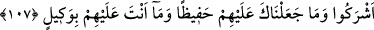

HAKKI GÖRMEK
104. (Doğrusu) size Rabbiniz tarafından basiretler (idrak kabiliyeti) verilmiştir.
Artık kim hakkı görürse faydası kendisine, kim de kör olursa zararı kendinedir.
Ben üzerinize bekçi değilim.
105. Böylece biz âyetleri geniş geniş açıklıyoruz ki, “Sen ders almışsın” desinler
de biz de anlayan toplum için Kur’an’ı iyice açıklayalım.
106. Rabbinden sana vahyolunana uy. O’ndan başka tanrı yoktur. Müşriklerden
yüz çevir.
107. Allah dileseydi, onlar ortak koşmazlardı. Biz seni onların üzerine bir bekçi
kılmadık. Sen onların vekili de değilsin.
Ey Muhammed, insanlara, özellikle Mekke halkına de ki: “Doğrusu size
Rabb’inizden” tevhid, nübüvvetin hak olması, öldükten sonra dirilme, hesap, cezâ ve
diğer hususlarla ilgili “deliller gelmiştir.”
( __WORD__ ), “basair” ( __WORD__ ) basîretin çoğuludur. Görme bir nur olup göz onunla gördüğü
gibi basîret de bir nurdur ve kişi onunla görür. Basîret lafzı açık delillerden dolayı
akılla kavranabilecek şeyleri idrak etmek için kalbe verilen kabiliyetten (kuvvet)
istiâredir. Çünkü, her ikisi de idrâke sebep olur. “Artık kim” bu deliller sâyesinde
hakkı “görürse” ve onlara îman ederse “faydası kendisine, kim de” kendisine bu
deliller apaçık olarak zahir olduktan sonra “kör olursa”, hakkı görmez, ondan saparsa
“zararı”, vebali “kendisinedir.” Hakkı görmemenin “körlük” olarak ifade edilmesi,
onun çirkinliğini ve iğrençliğini göstermek içindir.
Allah Teâlâ, şehâdet âlemindeki varlıkları ve orada kulları için hazırladığı yiyecek,
içecek, giyecek ve nikahlanacakları eşleri görmeleri için onların bedenlerine göz ve
görme kabiliyeti vermiştir. Aynı şekilde her kulun kalbine, gayblara yerleştirilen
hakikatleri ve kalp ehli için hazırlanan kemâlâtı kendisi ile görebileceği bir basîret
(kalp gözü) vermiştir.